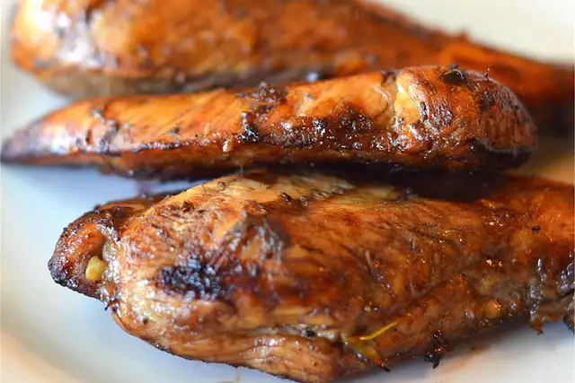
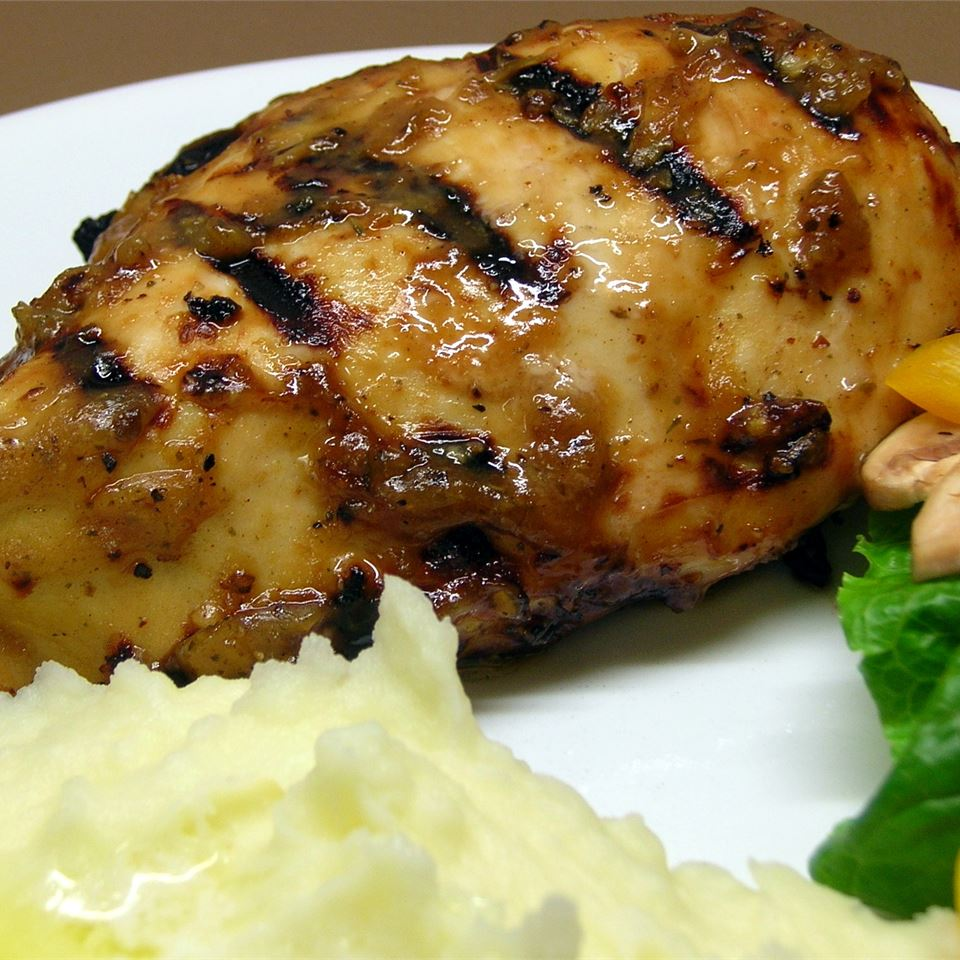

Grilled Chicken Marinade
Description
This marinade for grilled chicken is so flavorful and so easy to prep with easy pantry ingredients. It's simply the best chicken marinade for any occasion.
Ingrédients :
- ¼ cup red wine vinegar
- ¼ cup reduced-sodium soy sauce
- ¼ cup olive oil
- ½ teaspoons dried parsley flakes
- ½ teaspoon dried basil
- ½ teaspoon dried oregano
- ¼ teaspoon garlic powder
- ¼ teaspoon ground black pepper
- 5 skinless, boneless chicken breasts, thinly sliced
Directions
-
step 1
Whisk vinegar, soy sauce, olive oil, parsley, basil, oregano, garlic powder, and black pepper together in a bowl and pour into a resealable plastic bag. Add chicken, coat with the marinade, squeeze out excess air, and seal the bag. Marinate in the refrigerator, at least 4 hours.
-
step 2
Preheat grill for medium-low heat and lightly oil the grate. Drain and discard marinade.
-
step 3
Grill chicken on the preheated grill until no longer pink in the center, 4 to 5 minutes per side. An instant-read thermometer inserted into the center should read at least 165 degrees F (74 degrees C).
Unbelievable Chicken
Descriptions
This unusual combination of common ingredients is fabulous! Everyone who tastes it asks me to share the recipe. You will love it and the many compliments you get--I promise!
Ingrédients :
- ¼ cup cider vinegar
- 3 tablespoons prepared coarse-ground mustard
- 3 cloves garlic, peeled and minced
- 1 lime, juiced
- ½ lemon, juiced
- ½ cup brown sugar
- 1½ teaspoons salt
- ground black pepper to taste
- 6 tablespoons olive oil
- 6 skinless, boneless chicken breast halves
Directions
-
step 1
In a large glass bowl, mix the cider vinegar, mustard, garlic, lime juice, lemon juice, brown sugar, salt, and pepper. Whisk in the olive oil. Place chicken in the mixture. Cover, and marinate 8 hours, or overnight.
-
step 2
Preheat an outdoor grill for high heat.
-
step 3
Lightly oil the grill grate. Place chicken on the prepared grill, and cook 6 to 8 minutes per side, until juices run clear. Discard marinade.
Rusty Chicken Thighs

Description
I'm going to show you how to make this incredibly simple and highly effective grilled chicken marinade. It's so perfect and juicy and flavorful. It's an overall gorgeous way to grill chicken.
Ingrédients :
- 1 clove garlic, sliced, or more to taste
- 2 teaspoons Asian chile pepper sauce (such as sambal oelek), or more to taste
- 1½ tablespoons maple syrup
- 2 tablespoons soy sauce
- 2 tablespoons mayonnaise
- 3 tablespoons rice vinegar
- salt and freshly ground black pepper to taste
- 2 pounds skinless, boneless chicken thighs
- 1 lime, cut into 8 wedges
Directions
-
step 1
Mash garlic to a paste with a mortar and pestle. Mix chile pepper sauce, maple syrup, soy sauce, mayonnaise, and rice vinegar into garlic until marinade is thoroughly combined.
-
step 2
Transfer chicken thighs to a large flat container (such as a baking dish) and pour marinade over chicken; stir until chicken is coated. Cover dish with plastic wrap and refrigerate about 3 hours; if preferred, let stand about 30 minutes at room temperature. Unwrap dish and sprinkle with salt.
-
step 3
Preheat charcoal grill to high heat.
-
step 4
Place chicken thighs onto the hot grill with smooth sides down. Cook until chicken shows grill marks, about 3 minutes. Turn chicken over and cook until other side shows grill marks, about 5 minutes. Continue to cook, moving them occasionally and turning over every 2 minutes, until meat is no longer pink inside and the thighs are golden brown, 10 to 12 minutes.
-
step 5
Transfer chicken to a platter, let rest for 5 minutes, and serve garnished with lime wedges.